| |
East Coast Trip 2021
Lake Compounce Six Flags New England New York City American Dream Coney Island Six Flags Great Adventure
Casino Pier & Playland's Castaway Cove Dorney Park Cedar Point Kings Island Columbus Zoo & Waldameer Kennywood
Idlewild & Lakemont Park Hersheypark Knoebels
 So we're on the drive to our first destination for the day when I look out my window and see....this looks cool while at a red light. Pulls out phone and snaps this quick photo of something that looks cool. Months later making this update, thanks to the magic of iPhones always knowing where you are, I learn that this is the Sam & Eulalia Frantz Park, which is a local landmark most notable for the giant concrete ears of corn I noticed (I didn't realize it was corn since I didn't see it until further inspection of the photo back home. I honestly thought it was a funky looking graveyard at first). A tacky little roadside stop that road trips are known for. Except....I literally just took a photo of it at a red light. Does this count as visiting the place? Cause I highly doubt I'd actually stop simply due to time and priorities. But regardless, the place does look cool and I'm glad I at least got to get this photo of it and see it for about 30 seconds while on a drive.
So we're on the drive to our first destination for the day when I look out my window and see....this looks cool while at a red light. Pulls out phone and snaps this quick photo of something that looks cool. Months later making this update, thanks to the magic of iPhones always knowing where you are, I learn that this is the Sam & Eulalia Frantz Park, which is a local landmark most notable for the giant concrete ears of corn I noticed (I didn't realize it was corn since I didn't see it until further inspection of the photo back home. I honestly thought it was a funky looking graveyard at first). A tacky little roadside stop that road trips are known for. Except....I literally just took a photo of it at a red light. Does this count as visiting the place? Cause I highly doubt I'd actually stop simply due to time and priorities. But regardless, the place does look cool and I'm glad I at least got to get this photo of it and see it for about 30 seconds while on a drive.
 First stop of the day, the Columbus Zoo.
First stop of the day, the Columbus Zoo.
Come on in. The giraffe welcomes you to the Columbus Zoo.
 Welcome to Universal Studios....I mean the Columbus Zoo!
Welcome to Universal Studios....I mean the Columbus Zoo!
You may think that we're only here to credit whore. NO!!! That's only PART of the reason why we're here. Because it turns out that this is actually a really nice zoo.
It seriously is a huge zoo. We could EASILY spend the whole day here. But....we've got a packed schedule ahead of us and there's just so much to do.
Something tells me there's gonna be a lot of giraffes in this update. ;)
Ooh. I can't wait to visit not only my home continent, but also Africa and the Arctic Circle today! And still have time to visit Waldameer in the afternoon as well!
Uh oh. The locals (we're in Ohio. Remember?) will not be happy to learn that Mexican wolves have invaded the Columbus Zoo. They're bringing drugs. They're bringing crime. They're rapists. And some I assume, are good boys.
Hmm. Humans are out today. Human meat tacos? Nah, I'll just stick with chicken.
"BAWK!!! What did that Mexican Wolf just say!?"
*gasp* I heard Mexican Wolves are lurking out in our fields! *loads shotgun*
The animals are illerate. They can't read the sign that welcomes them.
I sense that there's something lurking in those pond waters.
 Hello Mr. Moose.
Hello Mr. Moose.
Quick little guide to know who's stalking you in case you see paw prints following you.
Please don't hike in nature if you are stupid is basically what the sign translates into.
"Hey! This isn't the arctic! Where's the ice!? Why's it so damn hot!? What sort of hellhole is this place!?"
 Maybe the permafrost wouldn't melt as fast if you weren't biking on it asshole!?
Maybe the permafrost wouldn't melt as fast if you weren't biking on it asshole!?
Climate change is bad. M'kay.
Ideally, you should just leave the bears alone. You'll most likely be fine if you do that and don't be an idiot while in nature. We've encountered bears in the wild before. We're fine and never been mauled. Unfortunately, too many tourists are asshole idiots who ruin what they touch. Let alone the problem with overtourism! GAH!!! MISANTHROPY RISING!!!
At the Columbus Zoo, we value diversity. We include bears of all different colors.
Notice how all the bears seem to be avoiding Ohio. I wonder why that could be?
Wake me up when all the humans are gone.
*gasp* Foxes and bears and playgrounds! Oh my!
"Hey. I was told that there was a playground around here. Where can I find that?"
 Don't worry. The glass will protect you.
Don't worry. The glass will protect you.
All right. And just like that, we're now in Africa.
Once again, Columbus Zoo proves my point that zoos and aquariums (at least the high quality ones) do more to actually help aniamls than 99% of the popular animal groups.
I may have never been to the continent, but I can assure you that all of Africa looks like that.
Not gonna lie. It seems like the countries with the coolest flags all come from Africa.
Come on Columbus Zoo. Do you really have to tell us "Don't step in sh*t!". Is that something people are seriously purposefully doing?
Notice how all the bears seem to be avoiding Ohio. I wonder why that could be?
Yeah. We couldn't not see these lovely creatures (I'm a big fan of giraffes).
Hey everyone! Instead of hiring someone to feed the giraffes, why don't we have the guests PAY US to do that job!? The money prints itself! =)
 Eat your vegetables Mr. Giraffe. They'll make you big and strong.
Eat your vegetables Mr. Giraffe. They'll make you big and strong.
"You know, I initially hated you. But then you brought me food. I guess you're not so bad after all Mr. Incrediblecoasters Dude."
No! It's not the guests who are the problem! It's the monkeys! I swear!
Come on out Mischevious Monkeys, wherever you are.
GAH!!! Please don't throw sh*t at me!
Once again, nature has been taken over by nature with more foreigners coming through by train.
You know, I never once thought about COVID's effect on animals until today (aside from the theory that it came from a bat from a Chinese Wet Market). Thanks for making me think of that Columbus Zoo.
Please don't f*ck up the birds migration patterns for your sh*tty skyscrapers.
 "Guys! That fallen tree isn't part of the exhibit! Help me clean it up!"
"Guys! That fallen tree isn't part of the exhibit! Help me clean it up!"
And finally, we're now in Asia.
CLIFF JUMP!!!
 On top of being a financially illerate idiot throwing away money due to dumb superstitions, you're also harming animals on top of wasting your money. Yet another reason to NOT do this.
On top of being a financially illerate idiot throwing away money due to dumb superstitions, you're also harming animals on top of wasting your money. Yet another reason to NOT do this.
See look! Your coins already turned the tigers into stone! ='(
 Can I try that next time I go grocery shopping? F*ck paying! I'm just going to hug the cashier instead and walk away with my groceries! >=)
Can I try that next time I go grocery shopping? F*ck paying! I'm just going to hug the cashier instead and walk away with my groceries! >=)
Snakes. Why did it have to be snakes?
Hello giant sleeping bats.
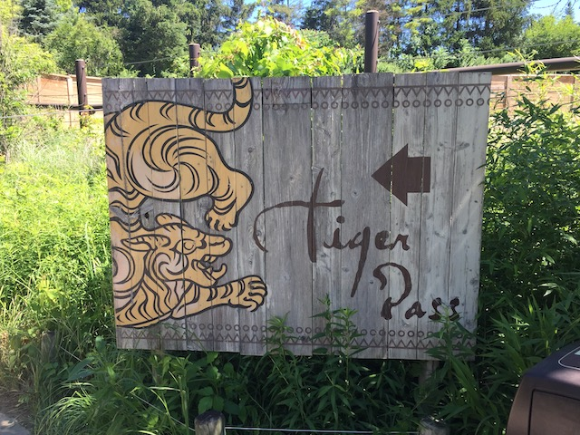
Warning! There be tigers that way!
Buy our merch! Buy our merch!
I'd like to buy ALL the plushies! =)
So I RARELY buy souviners. Last park souviner bought was a Chandu plushie while at Tokyo Disney because Chandu is f*cking AWESOME and it's Tokyo Disney! You have to get SOME merchandise. And the last shirt I bought was an Untamed T-Shirt from when I was at Canobie Lake Park (I sadly lost that shirt at Tar Creek Falls). But I saw this shirt and.....I was hooked. I wanted it. I was GOING to buy it. Unfortunately, they didn't have that shirt in my size. Did that stop me? NO!!! On the drive to Waldameer, I did some research, and essentially found the same shirt online. Only without the promotion for the Columbus Zoo. So I had to buy it. Honestly, I think I prefer the online version to the version at the zoo. Very happy I got that shirt.
OK. The zoo is great and all. But time for the real reason we came here.
Hey! This is a zoo! Don't forget! This place is all about us!
Hmm. I didn't think the credit here was a Spinning Mouse.
Nope. They just rescued this Spinning Mouse from some park in India that had to cancel the order and brought it here. It actually opened in the Summer of 2021. But it opened in July and we were here in June. Just a month too early.
Considering how much I enjoyed this zoo, I'd GLADLY come back to not only get this credit, but explore the zoo in further detail as it really is a great zoo.
 And on top of that, they have a decent looking water park here as well! Yeah! I not only want to come back here, but I want a full day here next time!
And on top of that, they have a decent looking water park here as well! Yeah! I not only want to come back here, but I want a full day here next time!
OK. Time to get the credit here.
 Ahoy there mateys! We be riding the Sea Dragon today!
Ahoy there mateys! We be riding the Sea Dragon today!
The lazy river from the water park snakes away to encircle the Sea Dragon? I highly approve of that.
So is the Sea Dragon anything special?
No. It's a kiddy wooden coaster. But honestly, as far as credit whoring coasters go at a place like a zoo, this is one of the better ones since.....at least it's not a Wacky Worm.
Such amazing airtime!
It's nothing special, but I'll be sure to reride this whenever I come back here.
We tried going back to Culvers, since....they're a chain not in California that is really underrated and I really liked them last time. Culvers > Whataburger (Suck it Texas). However, the grill was closed and they could only offer grilled chicken sandwiches. Uh...that is NOT why I came here. So we sadly had to bail on Culvers (and wound up just going to Jersey Mikes). =(
Something tells me we're not in Columbus anymore.
 So this is one of the few parks left in America that I still had to hit that had a major roller coaster that was of interest of me as an actual ride, not as credit whoring. So yeah. I'm really happy to be here.
So this is one of the few parks left in America that I still had to hit that had a major roller coaster that was of interest of me as an actual ride, not as credit whoring. So yeah. I'm really happy to be here.
 There's that wooden coaster that made visiting this park not just a credit whoring stop.
There's that wooden coaster that made visiting this park not just a credit whoring stop.
No wait. It's just another kiddy woodie. In fact, it's a clone of the Sea Dragon from the Columbus Zoo.
Apparently a lot of friends felt like this was a much better ride than Sea Dragon. Uh...What? How!? No!!! They're literally clones! And after riding them on the same day, I can safely say that I didn't notice ANY differences between the two rides. Only POSSIBLE reason for ranking Comet over Sea Dragon are the trees around the ride. That's a nicer setting. But as far as how it runs, neither is more thrilling than the other.
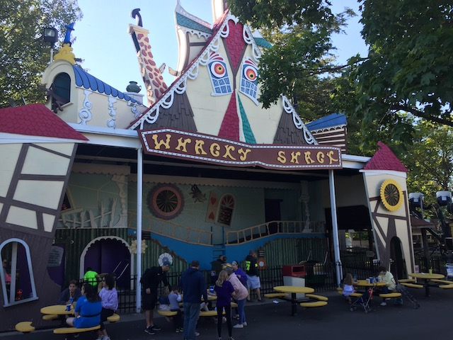
Ooh! A classic old-school dark ride!
It's a fun little dark ride. But....it is NOT a credit. AT ALL!!!
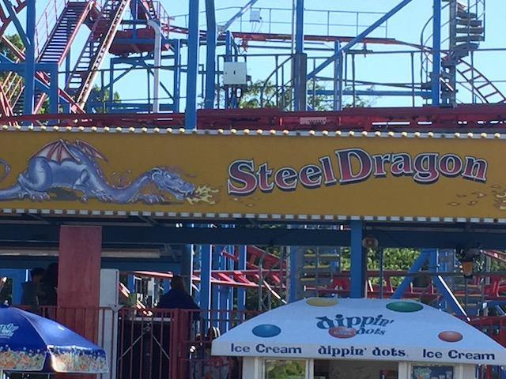
Did I just teleport my way back to Nagashima Spaland cause I'm seeing the entrance to Steel Dragon!
Nope. We're still at Waldameer (Damn! Was hoping I was back in Japan lol!). This is a different Steel Dragon.
 It may not be nearly as good as Steel Dragon 2000 (It may be my least favorite giga, but it's still a kickass ride totally worth your time, and better than ALL the Morgan Hyper Trio), but it's still a fun ride.
It may not be nearly as good as Steel Dragon 2000 (It may be my least favorite giga, but it's still a kickass ride totally worth your time, and better than ALL the Morgan Hyper Trio), but it's still a fun ride.
 It did spin a decent amount. Not as much as Spider, but more than Undertow.
It did spin a decent amount. Not as much as Spider, but more than Undertow.
Guys, I think there's something wrong with the locals.
I keep forgetting how fun and agressive these Shock Drops are. Great attractions for small parks like this.
It was fun, but honestly, the experience was ruined by a bunch of little sh*ts acting HORRIBLY!!! I really want to try this again without obnoxious brats ruining it.
These types of rides are pretty much ONLY meant for small parks since....capacity would be HORRENDOUS at major parks that get a lot of traffic.
Honestly, the common flat rides just being avaliable and the desire to ride them gives me the same relaxed chill vibes I get from visiting a park like Lakeside Park and ESPECIALLY Indiana Beach.
 OK. Enough small flat rides and minor coasters. TIME FOR THE REAL MEAT OF TODAY!!!
OK. Enough small flat rides and minor coasters. TIME FOR THE REAL MEAT OF TODAY!!!
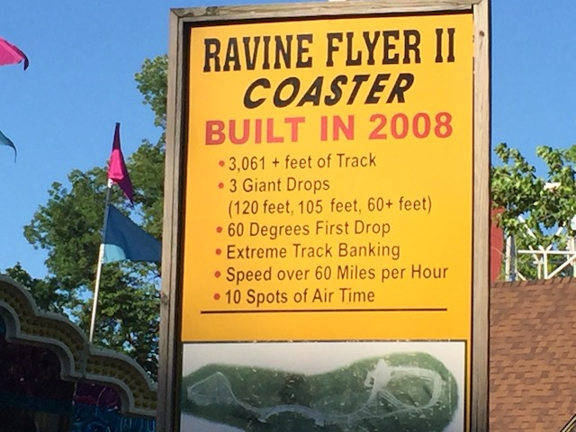
Some fun facts about Ravine Flyer II before you ride.
 One of the few major wooden coasters left in America I still needed. And I have to say....
One of the few major wooden coasters left in America I still needed. And I have to say....
This thing is GREAT!!! FANTASTIC wooden coaster. Just BARELY missed our Top 10 Wooden Coasters List (As of the posting of this update, you can consider it to be an unofficial #11)
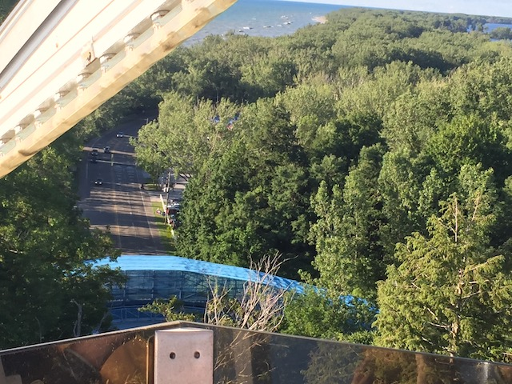
This ride is so crammed for space that it has to jump the road to have more room for the ride. Sorry about using this crappy photo. It's the ONLY one I have that showcases the bridge that allows Ravine Flyer II to cross the road.
 It has a decent amount of strong ejector air. But not only that....
It has a decent amount of strong ejector air. But not only that....
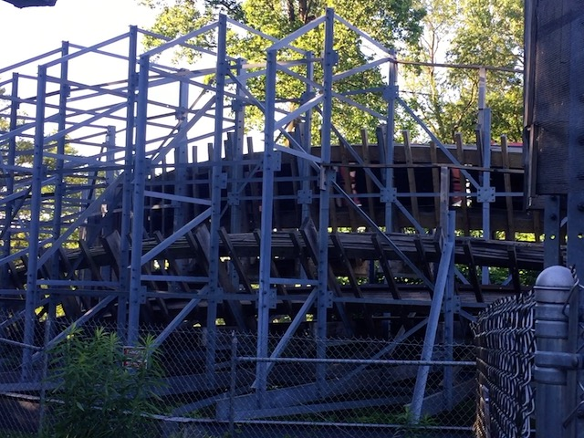
This thing has some CRAZY laterals, including some 90 degree turns just like those found on its older brother, Voyage.
 In fact, the best way for me to describe Ravine Flyer II would be Budget Voyage. It's extremely similar to Voyage. But not quite as insane, not NEARLY as long, and probably a lot cheaper so a smaller park can get it, while still affording the insanity and general feel that Voyage has to offer. So yeah. Big thumbs up from Incrediblecoasters.
In fact, the best way for me to describe Ravine Flyer II would be Budget Voyage. It's extremely similar to Voyage. But not quite as insane, not NEARLY as long, and probably a lot cheaper so a smaller park can get it, while still affording the insanity and general feel that Voyage has to offer. So yeah. Big thumbs up from Incrediblecoasters.
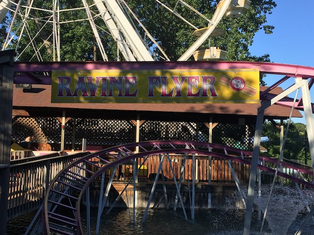
So Ravine Flyer II is a kickass crazy Gravity Group Woodie. Ravine Flyer III? Kiddy coaster. BOO!!! LAME!!!
 Well, at least this was one of the better kiddy coasters.
Well, at least this was one of the better kiddy coasters.
 Cha-Ching!
Cha-Ching!
Yes please. I would indeed like some ariel shots of Waldameer.
Getting a nice view of Waldameer from the ferris wheel.
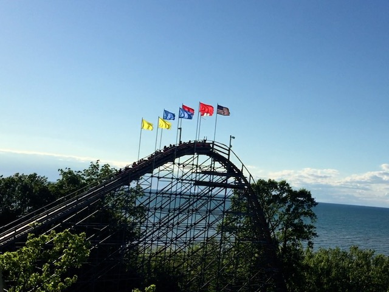
Can I just talk about the park setting of Waldameer? This park has a GREAT park setting right on the coast of Lake Erie. And once again, just BARELY missing our Top 10 Park Settings List (Again, consider this to be an unofficial #11).
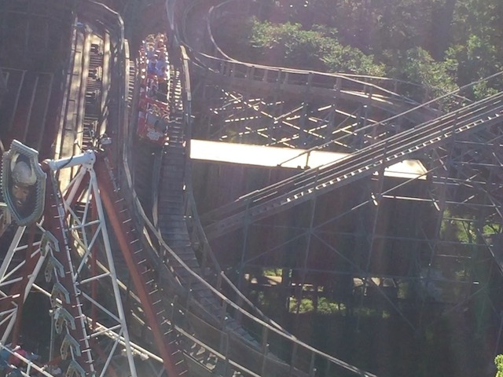
The twisted mess of track that is Ravine Flyer II from the ferris wheel.
Why yes. I would indeed like a COOKIE!!!
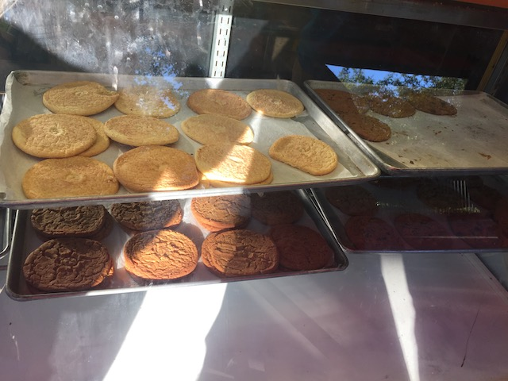
Freshly made and relatively big. Thumbs up from me.
Hey look! I found Haddy at Waldameer! =)
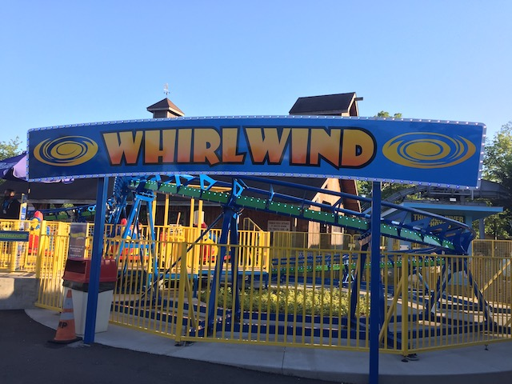
Time to get the final credit at Waldameer.
Aww. It's just another SBF Spinner. Nothing special. Or is it?
Not for me, but this was Evan's first SBF Spinner. Not the first time popped a kiddy coaster cherry on a trip with me.
These Falling Stars are becoming more rare by the year. So it was nice to ride one here.
This thing really spun a ton and I had a lot of fun on it. It spun even more than Steel Dragon.
 Speaking of which, might as well get some rerides in on Steel Dragon.
Speaking of which, might as well get some rerides in on Steel Dragon.
This thing can spin a decent amount with the right weight distribution.
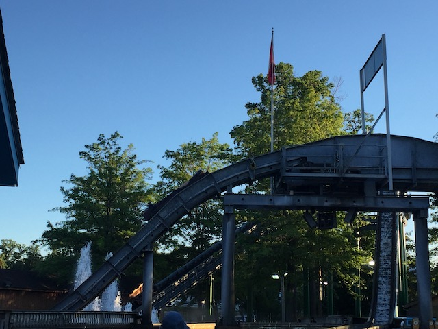
All right. This log flume was nothing special. But it was kind of awkward in a quirky fun way. And it did cool us off at least.
And of course, we have to close out with a mini-marathon of Ravine Flyer II.
 So glad the trip itenerary was changed and this was added at the last minute as I'm REALLY happy I was able to get on this (and this is almost certainly superior to the stuff we cancelled to add this to the trip).
So glad the trip itenerary was changed and this was added at the last minute as I'm REALLY happy I was able to get on this (and this is almost certainly superior to the stuff we cancelled to add this to the trip).
 Gravity Group really knows how to make a kickass wooden coaster and I'm looking foreward to checking out some of their crazy coasters they've done internationally (Too bad China is pretty far down on the priority list with no plans to do that trip anytime soon).
Gravity Group really knows how to make a kickass wooden coaster and I'm looking foreward to checking out some of their crazy coasters they've done internationally (Too bad China is pretty far down on the priority list with no plans to do that trip anytime soon).
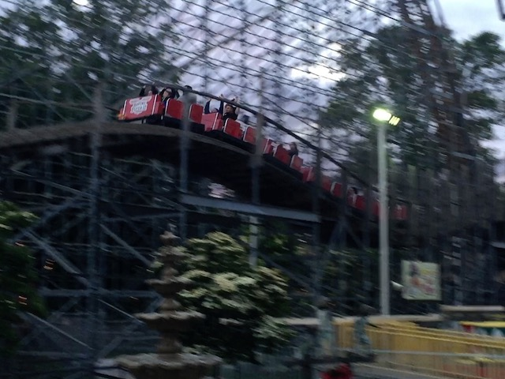
Love the ending with the ejector air.
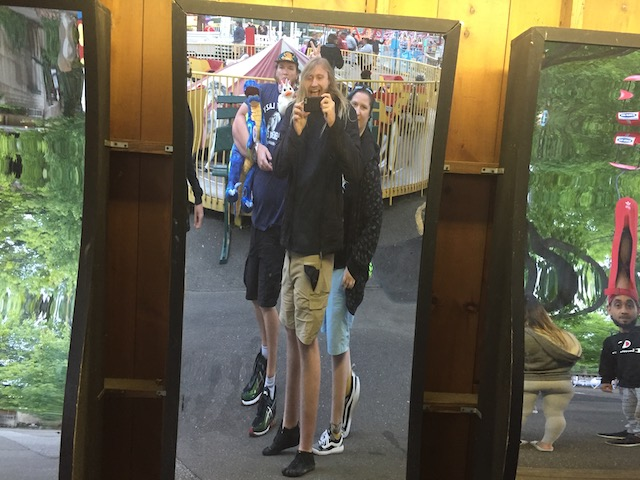
Incrediblecoasters Rule. If you walk past a funhouse mirror, you MUST stop and take a quick picture in it.
No problem Waldameer. You're a very fun and charming small park with a kickass wooden coaster. I definately hope to come back another day.
Hello Pittsburgh. Glad to be back here. Got some fun planned here tomorrow.
Kennywood
Home
|